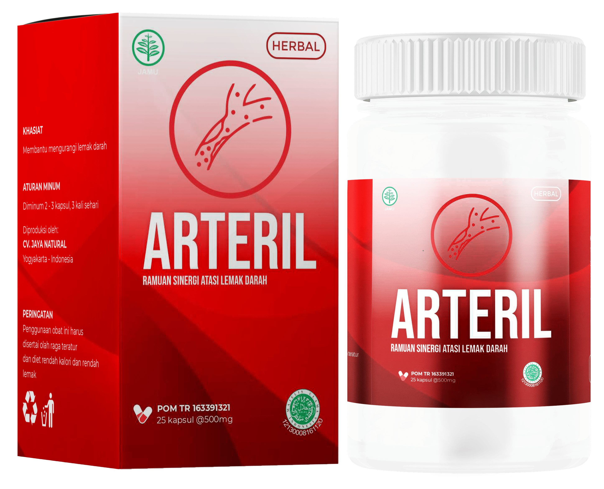

Setelah pembersihan pembuluh darah di usia lansia, tekanan darah akan membaik. Dengan cara ini, Anda dapat mengatasi 9 penyakit yang seharusnya tidak dapat disembuhkan.

Bagas Danantya adalah seorang ahli jantung dan profesor di Indonesia. Dr. Danantya telah menyembuhkan pasiennya yang menderita hipertensi tanpa meresepkan obat pil. Pasienya banyak dan semua orang yang datang kepadanya berhasil sembuh. Di antara pasien profesor tersebut banyak diantaranya orang-orang ternama.
Profesor Danantya jarang diwawancarai, dan berusaha menghabiskan lebih banyak waktu untuk merawat pasiennya. Namun, wartawan kami beruntung. Seorang dokter terkenal setuju untuk menjawab beberapa pertanyaan kepada pasien yang tidak memiliki kesempatan untuk membuat janji dengan Dr. Danantya.
IA BENAR-BENAR YAKIN BAHWA SIAPAPUN DAPAT MELAKUKAN PEMBERSIHAN KURATIF PEMBULUH DARAH DI RUMAH DAN SANGAT MENINGKATKAN KESEHATAN DAN KESEJAHTERAAN MEREKA. Pembersihan semacam itu membantu menghilangkan lonjakan tekanan dan menyembuhkan 9 penyakit kronis.
Dokter Danantya akan memberi tahu kami cara melakukan pembersihan pembuluh darah. Selain itu, materinya membahas topik:
- Hidup sampai usia 120 tahun tanpa pil itu nyata!
- Mengapa penyakit kronis yang tidak dapat disembuhkan ini menyebabkan penyumbatan pembuluh darah?
- Tanda-tanda yang jelas dan tersembunyi dari pembuluh darah yang tersumbat
- PENGOBATAN MODERN UNTUK HIPERTENSI TERKAIT USIA TANPA HARUS MENGKONSUMSI OBAT-OBATAN
Pembuluh yang tersumbat dapat membahayakan hidup Anda!
Profesor Bagas Danantya:
- Saya akan memberitahu Anda beberapa informasi yang saya harap akan membuat Anda memikirkan beberapa hal.
Penyebab kematian paling umum di dunia itu adalah PENYAKIT KARDIOVASKULAR. Alasan utama kemunculannya seiring bertambahnya usia adalah KOLESTEROL. Ternyata kolesterol adalah zat paling berbahaya di dunia. Zat ini membunuh orang lebih sering daripada alkohol, nikotin dan obat-obatan.
Dalam 94% kasus, jika seseorang tidak hidup sampai usia 80 tahun, itu karena kolesterol membunuh mereka.
Kolesterol berbahaya bagi kesehatan. Jika tidak menumpuk di dinding arteri, seseorang dapat dengan mudah hidup hingga 120 tahun.
Kolesterol itu apa? Saya tidak akan memberikan deskripsi zat ini di sini, seperti yang tertulis dalam buku kedokteran. Saya akan menjelaskannya lebih mudah untuk Anda. Coba bayangkan lemak dingin yang tertinggal di wajan yang tidak dapat dicuci setelah makan siang. Di bawah Anda dapat melihat foto penampakan kolesterolnya.
Zat ini, berada di dalam darah, disimpan di dinding pembuluh darah. Pertama plak kecil (pada usia 20-25 tahun), kemudian lapisan kolesterol tumbuh dengan cepat (pada usia 25-40 tahun), karena lebih banyak partikel menempel pada lapisan lengket. AKIBATNYA, PADA USIA 40 TAHUN, KOLESTEROL MENGURANGI CAHAYA DI DINDING ARTERI HAMPIR SETENGAHNYA. Menanggapi hal ini, jantung kami tidak punya pilihan selain meningkatkan tekanan. Seseorang memiliki lonjakan tekanan terkait usia dan hipertensi dengan segala konsekuensinya. Tetapi bahkan itu tidak lebih berbahaya!
Jauh lebih berbahaya adalah kenyataan bahwa kolesterol benar-benar menyumbat pembuluh darah kecil yang ada di semua jaringan. Sebagai akibat dari gangguan suplai darah, proses patologis berkembang di organ dalam. Terhadap latar belakang mereka, seseorang memiliki luka kronis.
Pertama, perutnya sakit, lalu limpanya, dan setelah beberapa saat ia mengalami stenosis hati dan pankreas. Biasanya dalam kasus seperti itu mereka mengatakan bahwa kesehatan seseorang terganggu. Kolesterol adalah yang paling sering memicu proses ini.
 Foto Kolesterol. Pada usia 50-60 tahun, seseorang mengumpulkan hingga 3,5 kg zat berbahaya ini!
Foto Kolesterol. Pada usia 50-60 tahun, seseorang mengumpulkan hingga 3,5 kg zat berbahaya ini!
Itu semua tergantung pada kondisi pembuluh darah. Jika urat darah halus di kaki tersumbat, itu menyebabkan varises, pembengkakan konstan dan berat abadi di kaki. Jika ini terjadi di hati, dapat muncul hepatitis dan sirosis, jika radang sendi dan osteoartritis atau nyeri pada tulang belakang muncul di persendian. Jika pembuluh darah di mata tersumbat, orang tersebut secara bertahap kehilangan penglihatannya.
Penyumbatan tidak dapat dihindari! Itu terakumulasi di pembuluh setiap orang. Penyumbatan pembuluh darah menyebabkan penuaan cepat.
KOLESTEROL INI MENYEBABKAN REAKSI PENUAAN DALAM TUBUH. Dan itu adalah penyumbatan pembuluh yang memperpendek hidup seseorang, membuatnya lebih sedikit waktu untuk hidup.
Alih-alih 120 tahun (ternyata sumber daya ini disimpan oleh organ kita), orang sering tidak hidup sampai 70 tahun! Terutama mereka yang memiliki hipertensi terkait usia di usia 40-50 tahun. Omong-omong, ini adalah salah satu gejala obstruksi vaskuler yang paling jelas.
Tidak hanya kolesterol: Zat ini juga menyumbat pembuluh darah Anda!
Profesor Miguel Angel Hernandez:
Kolesterol bukanlah segalanya, dua zat lagi menumpuk di pembuluh!
Massa Gumpalan
Jika kolesterol menyerupai lemak, maka massa trombus (bekuan darah) menyerupai keju cottage. Kumpulan gumpalan terbentuk di dinding bagian dalam pembuluh darah. Risiko pembekuan darah bahkan lebih tinggi dengan kolesterol. SETIAP SAAT GUMPALAN DARAH DAPAT MELUAS DARI DINDING PEMBULUH DAN MENCAPAI JANTUNG DAN MENYEBABKAN SERANGAN JANTUNG ATAU MENYEBABKAN STROKE. Kedua penyakit ini berakibat fatal dengan kemungkinan kematian dan kecacatan yang sangat tinggi.
Semakin tua orang tersebut, semakin besar risiko gumpalan akan terlepas. Itulah sebabnya orang tua sering menderita stroke atau serangan jantung.
Kristal Kalsium
Ini adalah garam logam berat, raksa, berbagai bahan kimia yang terakumulasi selama hidup Anda. Jika seseorang, misalnya, mengerjakan produksi berbahaya, maka ia memiliki lebih banyak simpanan seperti itu. Meskipun mempertimbangkan ekologi saat ini, deposit kalsium menumpuk di setiap orang. Zat-zat ini, seperti yang telah ditunjukkan, bersifat KANKER. Artinya, mereka mempromosikan pembelahan sel abnormal, yang mengarah ke kanker.
Hampir 98% kematian akibat kanker, kadar deposit kristal yang tinggi ditemukan dalam darah. Kita semua tahu bahwa raksa itu berbahaya. Dengan akumulasi besar kristal kalsium, darah itu sendiri menjadi berbahaya.
 Pada usia 50 tahun, pembuluh darah tersumbat di seluruh tubuh. Semakin tersumbat, semakin banyak penyakit kronis muncul, semakin cepat seseorang menjadi tua dan merasa lebih buruk.
Pada usia 50 tahun, pembuluh darah tersumbat di seluruh tubuh. Semakin tersumbat, semakin banyak penyakit kronis muncul, semakin cepat seseorang menjadi tua dan merasa lebih buruk.
Periksa diri Anda! Apa yang harus Anda harus lakukan jika pembuluh darah tersumbat dan Anda berisiko mengalami kematian dini?
Profesor Bagas Danantya:
Saya dapat langsung memberitahu Anda bahwa jika Anda belum pernah menjaga pembuluh darah Anda dan Anda berusia di atas 50 tahun, pembuluh Anda akan tersumbat. Jika Anda membersihkannya, ANDA AKAN SEGERA MERASA LEBIH BAIK.
Gejala pembuluh darah tersumbat:
- Bengkak di pagi hari
- Telinga berdenging
- Mengapung di mata
- Nyeri sendi
- Pusing
- Insomnia di malam hari dan rasa lelah di siang hari
- Merasa kelelahan konstan
- Penglihatan kabur
- Gangguan memori
- Pembuluh mekar
- Sesak napas
- Masalah pencernaan
- Masalah kelebihan berat badan
Anda mengatakan bahwa membersihkan pembuluh darah dapat memperpanjang umur orang tua dan menstabilkan tekanan darah?
Profesor Bagas Danantya:
- Saya tahu teliti. Di klinik, saat ini kami meresepkan pembersihan pembuluh darah untuk semua pasien berusia diatas 50 tahun (beberapa di atas 40 tahun). Dan setelah pembersihan, kami sudah memeriksanya. PADA SEKITAR 9 DALAM 10 ORANG, TEKANAN DINORMALKAN LANGSUNG SETELAH DIBERSIHKAN DAN TIDAK MEMERLUKAN PERAWATAN KEMBALI.
Dengan kata lain, ada kemungkinan bahwa banyak dari mereka yang sekarang mengonsumsi pil setiap hari untuk menstabilkan tekanan darah mereka. Mereka dapat hidup tanpa tablet tersebut. Yang mereka butuhkan hanyalah membersihkan dinding arteri. Bahkan jika tekanan darah tinggi tidak hilang sepenuhnya (dan memang demikian), mereka merasa jauh lebih baik!
Sayangnya, cara sederhana untuk menormalkan tekanan darah ini disembunyikan oleh dokter korup dan perusahaan farmasi yang mendapat untung dari perawatan yang panjang dan mahal. Lagi pula, semakin lama seseorang sakit, semakin banyak yang akan dia habiskan untuk pengobatan. Hal ini bermanfaat bagi mereka. Membersihkan pembuluh darah itu mudah, murah dan cepat membantu Anda pulih.
Seorang pensiunan Sumatra sembuh dari hipertensi dengan membersihkan pembuluh darahnya. Dan ada banyak orang seperti ia...
Saya ingin menunjukkan surat dari Anggun Zulfa , seorang pensiunan berasal dari Jogja. Anggun mengalami hipertensi yang cukup parah dan itu membuatnya tidak bisa melakukan banyak hal. Akhirnya ia pergi ke Dokter dari klinik ia diberi kabar bahwa waktu nya sudah tidak lama lagi dan ini tidak dapat di atasi. Anggun saat mendengar kata-kata itu iya sedih sekali dan tidak tahu harus melakukan apa agar ia dapat hidup lama. Kerabatnya memutuskan untuk tidak menyerah. Wanita tua itu sendiri tidak bisa datang kepada kami, jadi putrinya menelepon klinik kami untuk meminta bantuan untuk Ibunya. Bagaimana kami bisa membantu dari jarak jauh? Saya bahkan tidak bisa membuat diagnosis melalui telepon. Kami menyarankan Anda untuk membersihkan dinding arteri Anda.
Setelah 3 bulan, wanita tua itu menulis sendiri kepada kami! Saya ingin menunjukkan suratnya.
 Anggun Zulfa 75 tahun. Seorang pensiunan berasal dari Jogja yang menderita tekanan darah tinggi dan banyak penyakit lainnya.
Anggun Zulfa 75 tahun. Seorang pensiunan berasal dari Jogja yang menderita tekanan darah tinggi dan banyak penyakit lainnya.
“Terima kasih banyak telah memberi SAYA HIDUP KEMBALI! Ketika putri saya menelepon Anda, dia praktis tidak sadarkan diri, tidak tahu apa-apa dengan kondisi saya. Rasanya seperti kabut di kepalaku dari tekanan tinggi yang tidak turun bahkan dengan pil. Saya berada dalam keadaan serangan jantung, mereka bahkan tidak menempatkan saya di rumah sakit, mereka mengatakan kepada putri saya bahwa itu serangan jantung palsu. Tapi putriku tidak percaya dengan informasi dari mereka dan ia memutuskan untuk menelepon Anda. Dan kemudian dia mulai memberiku suplemen yang Anda kirimkan kepada kami. Alhamdulillah, penyakit ini berlalu. Secara bertahap, tekanan mereda. Sekarang tidak naik sama sekali. Aku benar-benar kembali dari dunia lain. Seminggu yang lalu saya menjalani pemeriksaan di rumah sakit kami. Ketika saya diberitahu bahwa saya sehat untuk usia saya, saya sangat terkejut. Beberapa bulan yang lalu, dia hampir mati. Aku benar-benar berharap untuk tetap hidup. Saya mencintai hidup dengan segenap jiwa saya. Terima kasih banyak atas bantuan dan keselamatan saya. "
INI ADALAH KEAJAIBAN YANG DAPAT TERJADI SETELAH MEMBERSIHKAN PEMBULUH DARAH. Meskipun sebenarnya tidak ada keajaiban di sini, semuanya jelas.
Sebuah metode pembersihan pembuluh darah untuk pensiunan dan penderita hipertensi.
Profesor Bagas Danantya:
- Sampai saat ini, hanya ada satu obat di Indonesia yang melakukan pekerjaan ini dengan baik. Ini disebut Arteril. Suplemen ini dibuat pada tahun oleh Institut Vaskular dan Kardiologi. Suplemen ini mengandung sekitar 40 bahan aktif: ekstrak tumbuhan yang berguna untuk pembuluh darah, vitamin, mikro dan makro.
Bahan yang paling penting dari "Arteril" adalah apa yang disebut. "PARTIKEL OKSIGEN AKTIF", yang mampu "memakan" zat yang terakumulasi dalam pembuluh darah. Mereka melarutkan kolesterol, pembekuan darah dan kristal kalsium.
"Molekul oksigen aktif" ditemukan pada tahun 2007 oleh para ilmuwan Jepang. Dua ilmuwan Jepang telah memenangkan Hadiah Nobel untuk penelitian mereka di bidang ini. Saat ini, "molekul oksigen aktif" secara aktif digunakan dalam dunia kedokteran.
Kebetulan, orang Jepang sendiri mulai lebih memperhatikan pembersihan pembuluh darah pada usia 40-50 tahun dari tahun 1965, ketika Program Nasional untuk Peningkatan Kesehatan dan Umur Panjang diadopsi. Dalam undang-undang ini, pembersihan darah diatur dalam paragraf tersendiri. Dan hari ini kita melihat efek dari keputusan seperti itu. Jepang memegang rekor harapan hidup. Kehidupan hingga 100 tahun bagi orang Jepang adalah hal biasa. Jika sebelumnya orang Jepang membersihkan pembuluh darah dengan herbal, olahraga, dan yoga, kini mereka menggunakan suplemen khusus yang berbasis "oksigen aktif".
Berapa lama Arteril harus digunakan untuk membersihkan pembuluh darah?
Rata-rata, perjalanan minum suplemen ini adalah 2-4 minggu. Setelah selesai, Anda harus melihat kondisi kesehatan Anda.
Saya akan mencantumkan apa yang dapat dilakukan Arteril untuk tubuh dan kesehatan Anda selama pembersihan, dan juga beberapa bulan setelahnya.
Membersihkan dan memulihkan pembuluh darah
Berkat "molekul oksigen aktif", Arteril melarutkan timbunan kolesterol, pembekuan darah, dan penumpukan kalsium. Selain itu, berkat ekstrak mengkudu, zat tersebut meningkatkan nada pembuluh darah dan mengembalikan elastisitasnya. Setelah satu bulan, sebagaimana dibuktikan oleh data penelitian, pembuluh darah menjadi bersih dan fleksibel seperti pada orang muda berusia 25-30 tahun. Mereka membangun kembali kapiler kecil. Akibatnya, tekanan manusia berhenti melompat, kelemahan hilang, kantuk hilang, penyembuhan luka dan luka membaik. Selain itu, lebih banyak energi muncul. Anda akan memiliki banyak energi, Anda akan ingin melakukan banyak aktifitas di luar.
Mengembalikan kesehatan kembali organ dalam dan persendian
Setelah membersihkan pembuluh darah, pemulihan kembali organ dalam akan dimulai. Untungnya, alam telah memberi kita sebuah properti: yaitu regenerasi sel. Akibatnya, banyak penyakit hilang. Misalnya, jika pankreas atau limpa Anda sakit, rasa sakitnya akan berhenti. Sangat sering, bisul lambung dan luka pada saluran pencernaan yang disebut duodenum akan sembuh setelah membersihkan pembuluh darah. Selain itu, sendi dipulihkan. Retak dan robekan di leher, punggung, dan persendian akan menghilang. Tulang rawan menjadi hidup kembali. Lutut dan jari kaki tidak lagi bereaksi terhadap perubahan cuaca. Mobilitas sendi kembali normal lagi.
Mencairkan kelebihan lemak
Kelebihan berat badan inilah yang memperburuk kondisi pasien hipertensi dan lansia sebanyak 4 hingga 5 kali lipat. Semakin besar beratnya, semakin besar beban pada pembuluh darah, jantung dan persendian. Seringkali penyebab kenaikan berat badan adalah penyumbatan pembuluh darah, karena glukosa tidak dapat dikeluarkan dari jaringan dalam jumlah yang cukup. Setelah membersihkan lumpur dari piring, beratnya mulai hilang secara otomatis. Selain itu, Arteril memiliki ekstrak Rosella, sebagai sumber antioksidan dan memperlancar sistem metabolisme. Rata-rata, sebulan setelah membersihkan pembuluh darah, seseorang dapat menurunkan berat badan hingga 8-12 kg.
Akan memulihkan penglihatan dan ingatan
Arteril mengandung ekstrak seledri, yang memperlancar aliran darah dengan mengundurkan pembuluh darah arteri serta, sebagai akibatnya penglihatan menjadi normal secara bertahap. Banyak orang mulai melihat nomor bus dari jauh dan mampu memasukkan benang kembali ke dalam jarum. Ada pemulihan penuh pembuluh darah di mata. Mereka yang memiliki pembuluh darah bersih tidak menghadapi kebur mata sama sekali! Semua dokter mata mengetahui hal ini.

Efek kupu-kupu untuk orang tua dan mereka yang menderita hipertensi
Tindakan Arteril mirip dengan berkibarnya sayap kupu-kupu, karena menyebabkan reaksi berantai pada kesehatan organ dalam dan peningkatan kesejahteraan. Dimulai dengan normalisasi pembuluh darah dan diakhiri dengan pemulihan penglihatan dan persendian.
1-3 bulan setelah membersihkan pembuluh darah, Anda akan merasa seperti terlahir kembali. Pada saat yang sama, pasien merasakan perbaikan yang nyata setiap minggu.
Menambah energi
Di pagi hari Anda bangun dari tempat tidur dengan mudah, Anda tidak perlu memaksakan diri untuk bangun, meremas dan menggosok kaki Anda. Sejak pagi tubuh dipenuhi dengan energi dan kekuatan.
Anda memiliki kesejahteraan dan suasana hati yang baik
Dari pagi dan sepanjang hari. Anda tidur nyenyak. Anda akan merasa lebih muda. Anda tidak perlu pergi ke kamar mandi beberapa kali dalam semalam. Tidak ada yang sakit atau gatal.
Makanan yang bernutrisi
Menu Anda akan tumbuh secara signifikan. Anda tidak perlu lagi mengikuti diet ketat. Jika Anda makan "sesuatu yang buruk" Anda tidak akan lagi mengalami sendawa pahit, sakit perut berdenyut.
Tubuh akan lebih kuat
Ketika Anda pergi keluar rumah, Anda tidak perlu lagi mengkhawatirkan kaki Anda: Anda tidak menganggap berjalan sebagai beban, Anda bisa berjalan sepanjang hari, dan kaki Anda tidak lelah dan tidak bengkak. Anda tidak lagi mengalami sesak napas atau pusing. Anda akan dapat kembali bekerja dengan senang hati di rumah pedesaan Anda.
Ketenangan
Anda benar-benar tenang dan rileks. Anda tidak memiliki rasa sakit yang terus-menerus memakan Anda, mencegah Anda untuk fokus pada hal lain. Ketika tidak ada yang sakit, hal-hal biasa, suara, bau mulai mengambil warna baru yang terlupakan.
Anda memiliki visi yang sempurna
Bahkan penglihatan yang rusak parah secara bertahap akan mulai beregenerasi. Apa yang Anda lihat buram sebelumnya akan menjadi jelas. Sekali lagi, Anda dapat melihat nomor bus dari jauh, mengagumi keindahan alam lagi.
Dan yang terpenting, SEKARANG ANDA DAPAT HIDUP TANPA MENGKONSUMSI PIL. Lupakan pergi ke apotek mencari obat untuk menurunkan tekanan darah seolah-olah itu mimpi buruk. Ini adalah masa lalu karena tekanan akan berhenti melompat!
Arteril telah menghilang dari sebagian besar di apotek!
Sejauh ini yang kami tahu, sangat sulit untuk membeli Arteril di apotek. Suplemen ini jarang tersedia. Apakah itu benar? Apa yang bisa Anda sarankan kepada warga Indonesia?
- Ya, itu benar. Arteril diproduksi dalam jumlah kecil yang terbatas dan karena itu ada di apotik. Sayangnya, kebanyakan dari mereka pergi ke luar negeri, yang lain dibeli oleh klinik swasta.
Sayangnya, kami tidak memiliki cukup produk ini untuk semua pasien hipertensi di Indonesia. Itulah mengapa kami memutuskan untuk memberikannya kepada mereka yang paling cepat meninggalkan permintaan di situs.
Untuk berpartisipasi dalam program kami, Anda perlu mengklik tombol "PUTAR" pada gulungan dengan diskon di bawah ini. Tergantung pada apa yang Anda dapatkan, Anda bisa mendapatkan Arteril dengan harga diskon. Ini hanya bisa diputar satu kali.
Jika Anda ingin mengobati hipertensi Anda dengan suplemen ini, saya sarankan untuk memesannya segera setelah tersedia.
Apa yang perlu Anda lakukan untuk mendapatkan Arteril:
- Anda harus berada di Indonesia. Kami tidak mengirimkan Arteril ke luar negeri.
- Pembelian Arteril diizinkan HANYA UNTUK PENGGUNAAN PRIBADI. Saya meminta penjual untuk menyerahkan obat kepada orang-orang! Mengambil keuntungan dari orang tua tidak manusiawi!
- Tanda terima dapat diperoleh di situs web ini dengan mengisi formulir khusus di bawah ini. Di dalamnya, Anda harus memasukkan nomor telepon untuk menghubungi konsultan.
Manfaatkan kesempatan ini sebelum orang lain melakukannya!
Jika Anda ingin meningkatkan kesehatan tubuh dan menghilangkan lonjakan tekanan yang tiba-tiba dengan bantuan pembersihan pembuluh darah yang dalam, pesan obat sesegera mungkin, sementara masih tersedia.
PERHATIAN!
Hanya melalui website resmi kami Anda akan mendapatkan diskon tambahan untuk pemesanan Arteril. Coba keberuntungan Anda dan klik tombol SPIN. Jika Anda beruntung, Anda akan dapat memesan produk ini lebih murah! Semoga beruntung! PUTAR
PUTAR
Dapatkan Arteril dengan harga
Anda menerima diskon 50% untuk pembelian produk Arteril!
DISKUSI